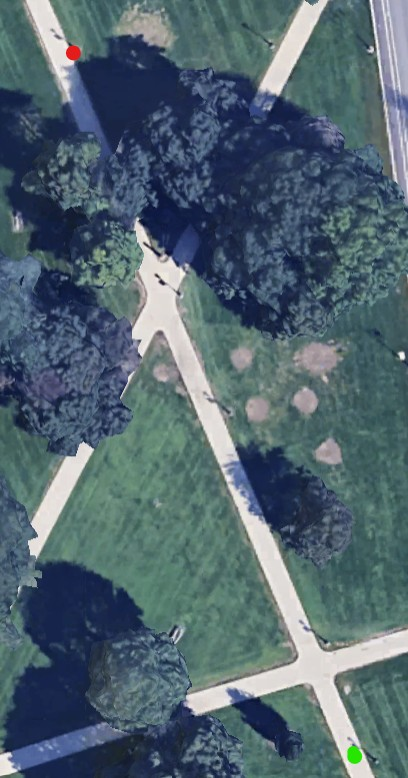

Stats
Par: 3
Distance: 255 ft
Hole Description
Starting from on the path from behind the lamppost near the flag pole from the last hole, this hole is another straight shot to the lamp post on the right of the path after the intersection.
Map key: green dot starting box, red dot target, blue dot mandatory.